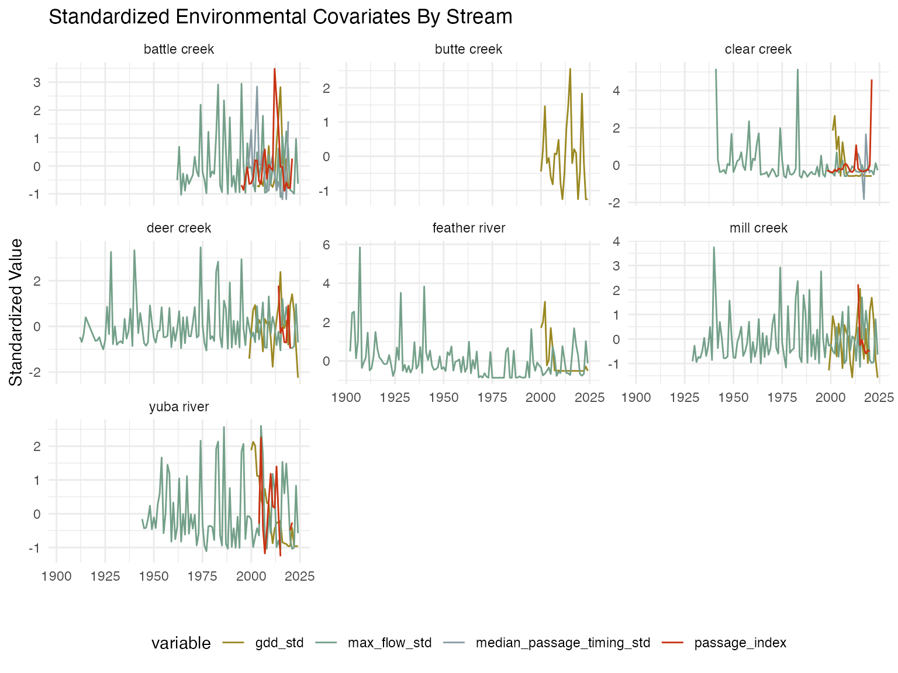

prep_environmental_covariates.RmdSeveral approaches were considered for summarizing temperature:
Following initial analyses (TODO - do we want these in the repo somewhere??), we focused on approach 3. We calculated the metric for migration months (March - May) in the Sacramento River and holding months (May - August) in each tributary.
TODO - keep this analysis? Currently not included: (We tested both the individual effects of migratory and holding temperatures as well as a cumulative metric (summed migratory and holding temperatures)).
# set thresholds and months
# TODO full suite of temperatures tried are in the .Rmd on SRJPE model - should I include all those?
# TODO future exploration to try different thresholds
gdd_base_sac <- 20 # https://journals.plos.org/plosone/article?id=10.1371/journal.pone.0204274
gdd_base_trib <- 20
migratory_months <- 3:5
holding_months <- 5:8 # TODO should these be updated?
# read in standard temperature
# TODO replace with data object created by temperature_data_pull
standard_temp <- read_csv(here::here("data-raw", "database-tables", "standard_temperature.csv"))
# calculate sum of days above the thresholds
gdd_sac <- standard_temp |>
filter(month(date) %in% migratory_months, stream == "sacramento river") |>
mutate(gdd_sac = mean_daily_temp_c - gdd_base_sac,
gdd_sac = ifelse(gdd_sac < 0, 0, gdd_sac)) |>
group_by(year(date)) |>
summarise(gdd_sac = sum(gdd_sac, na.rm = T)) |>
rename(year = `year(date)`) |>
ungroup()
gdd_trib <- standard_temp |>
filter(month(date) %in% holding_months & stream != "sacramento river") |>
mutate(gdd_trib = mean_daily_temp_c - gdd_base_trib,
gdd_trib = ifelse(gdd_trib < 0, 0, gdd_trib)) |>
group_by(year(date), stream) |>
summarise(gdd_trib = sum(gdd_trib, na.rm = T)) |>
rename(year = `year(date)`) |>
ungroup()
gdd <- left_join(gdd_trib, gdd_sac,
by = c("year")) |>
mutate(gdd_sac = ifelse(is.na(gdd_sac), 0, gdd_sac),
gdd_total = round(gdd_sac + gdd_trib, 2))
knitr::kable(head(gdd, 10))| year | stream | gdd_trib | gdd_sac | gdd_total |
|---|---|---|---|---|
| 1998 | feather river | 0.000000 | 0 | 0.00 |
| 1999 | butte creek | 49.583333 | 0 | 49.58 |
| 1999 | deer creek | 79.333333 | 0 | 79.33 |
| 1999 | feather river | 9.722222 | 0 | 9.72 |
| 1999 | mill creek | 23.825000 | 0 | 23.82 |
| 2000 | butte creek | 194.625000 | 0 | 194.62 |
| 2000 | deer creek | 183.550000 | 0 | 183.55 |
| 2000 | feather river | 2.222220 | 0 | 2.22 |
| 2000 | mill creek | 97.262500 | 0 | 97.26 |
| 2000 | yuba river | 0.000000 | 0 | 0.00 |
gdd |>
ggplot(aes(x = year, y = gdd_total)) +
geom_line() +
facet_wrap(~stream, scales = "free_y")
Mximum flow more effectively captures the high flow events that support migration speed and passage to upstream holding areas. Additionally, upon inspection of the data source across multiple years average maximum flow over the migratory and holding months (March-May and May-August, respectively) was more representative of the fluctuations in flow over the entire year.
# TODO update to use data object from flow data pull . Rmd
migratory_and_holding_months <- 3:8
flow_metrics <- read_csv(here::here("data-raw", "database-tables", "standard_flow.csv")) |>
filter(month(date) %in% migratory_and_holding_months) |>
mutate(year = year(date)) |>
group_by(stream, year) |>
summarise(mean_flow = mean(flow_cfs, na.rm = T),
max_flow = max(flow_cfs, na.rm = T))
knitr::kable(head(flow_metrics, 10))| stream | year | mean_flow | max_flow |
|---|---|---|---|
| battle creek | 2003 | 604.3207 | 2740 |
| battle creek | 2004 | 452.6250 | 1370 |
| battle creek | 2005 | 468.2554 | 2050 |
| battle creek | 2006 | 919.9620 | 4700 |
| battle creek | 2007 | 335.4457 | 558 |
| battle creek | 2008 | 327.8913 | 597 |
| battle creek | 2009 | 391.7717 | 2630 |
| battle creek | 2010 | 469.5163 | 1010 |
| battle creek | 2011 | 763.7337 | 1870 |
| battle creek | 2012 | 424.0217 | 1590 |
flow_metrics |>
ggplot(aes(x = year, y = max_flow)) +
geom_line() +
facet_wrap(~stream, scales = "free_y")
Passage timing was considered; however, limited data reduced the sample size of the datasets for some tributaries so much as to remove them from candidacy for the model due to lack of statistical power.
# TODO update to pull from adult data object for upstream passage
upstream_passage_timing <- read_csv(here::here("data-raw", "database-tables", "standard_adult_upstream.csv")) |>
filter(!is.na(date)) |>
mutate(stream = tolower(stream),
year = year(date),
week = week(date)) |>
filter(run %in% c("spring","not recorded")) |>
group_by(year, stream) |>
summarise(count = sum(count, na.rm = T),
median_passage_timing = median(week, na.rm = T),
mean_passage_timing = mean(week, na.rm = T),
min_passage_timing = min(week, na.rm = T)) |>
ungroup() |> # TODO look at up-down
select(-c(count))
knitr::kable(head(upstream_passage_timing, 10))| year | stream | median_passage_timing | mean_passage_timing | min_passage_timing |
|---|---|---|---|---|
| 1998 | battle creek | 23.5 | 24.03333 | 22 |
| 1999 | battle creek | 25.0 | 24.58824 | 21 |
| 2000 | battle creek | 28.0 | 28.48684 | 21 |
| 2001 | battle creek | 21.5 | 23.33784 | 19 |
| 2002 | battle creek | 27.0 | 27.90909 | 21 |
| 2003 | battle creek | 33.0 | 32.00000 | 25 |
| 2004 | battle creek | 24.0 | 24.34783 | 22 |
| 2005 | battle creek | 24.0 | 24.81395 | 21 |
| 2006 | battle creek | 25.5 | 25.77500 | 24 |
| 2007 | battle creek | 22.0 | 22.95187 | 19 |
upstream_passage_timing |>
ggplot(aes(x = year, y = median_passage_timing)) +
geom_line() +
facet_wrap(~stream, scales = "free_y")
To account for the influence of large scale interannual climate variability, we investigated water year type as a covariate as described by the California Department of Water Resources and available in the waterYearType package in R.
We used the waterYearType package to pull water year
assignments as a categorical covariate. Because for some streams we had
very few data points (i.e. for Mill Creek, only seven years were
considered dependable), we simplified all potential categories of water
year type into either dry (Dry, Below Normal,
Critical) or wet (Wet,
Above Normal).
water_year_data <- waterYearType::water_year_indices |>
mutate(water_year_type = case_when(Yr_type %in% c("Wet", "Above Normal") ~ "wet",
Yr_type %in% c("Dry", "Below Normal", "Critical") ~ "dry",
TRUE ~ Yr_type)) |>
filter(location == "Sacramento Valley") |>
dplyr::select(WY, water_year_type)
knitr::kable(head(water_year_data, 10))| WY | water_year_type |
|---|---|
| 1901 | NA |
| 1902 | NA |
| 1903 | NA |
| 1904 | NA |
| 1905 | NA |
| 1906 | wet |
| 1907 | wet |
| 1908 | dry |
| 1909 | wet |
| 1910 | wet |
We hypothesized that total annual passage might be an indicator of density because more adults in holding/spawning habitat could result in less available habitat and thus influence prespawn mortality.
# pull in passage estimates and use these for upstream_count
upstream_passage_index <- read_csv(here::here("data-raw", "database-tables", "standard_adult_passage_estimate.csv")) |>
mutate(passage_index = passage_estimate) |>
select(year, stream, passage_index)
knitr::kable(head(upstream_passage_index, 10))| year | stream | passage_index |
|---|---|---|
| 1995 | battle creek | 66 |
| 1995 | clear creek | 2 |
| 1996 | battle creek | 35 |
| 1996 | clear creek | NA |
| 1997 | battle creek | 107 |
| 1997 | clear creek | NA |
| 1998 | battle creek | 178 |
| 1998 | clear creek | 47 |
| 1999 | battle creek | 73 |
| 1999 | clear creek | 35 |
upstream_passage_index |>
ggplot(aes(x = year, y = passage_index)) +
geom_line() +
facet_wrap(~stream, scales = "free_y")All continuous environmental variables (flow and temperature) were standardized and centered before performing any analyses so that the scale of the data did not affect results. Water year type was coded as a binary variable for wet (wet, above normal) vs. dry (below normal, dry, critical).
p2s_model_covariates_standard <- full_join(flow_metrics,
gdd,
by = c("year", "stream")) |>
full_join(upstream_passage_timing,
by = c("year", "stream")) |>
full_join(water_year_data,
by = c("year" = "WY")) |>
full_join(upstream_passage_index,
by = c("year", "stream")) |>
filter(!is.na(stream),
stream != "sacramento river") |>
select(-c(mean_flow, mean_passage_timing, min_passage_timing,
gdd_trib, gdd_sac)) |>
mutate(wy_type = ifelse(water_year_type == "dry", 0, 1),
max_flow_std = as.vector(scale(max_flow)),
gdd_std = as.vector(scale(gdd_total)),
passage_index = as.vector(scale(passage_index)),
median_passage_timing_std = as.vector(scale(median_passage_timing))) |>
select(year, stream, wy_type, max_flow_std, gdd_std, passage_index, median_passage_timing_std) |>
arrange(stream, year)
knitr::kable(head(p2s_model_covariates_standard, 10))| year | stream | wy_type | max_flow_std | gdd_std | passage_index | median_passage_timing_std |
|---|---|---|---|---|---|---|
| 1995 | battle creek | NA | NA | NA | -0.6837483 | NA |
| 1996 | battle creek | NA | NA | NA | -0.8597315 | NA |
| 1997 | battle creek | NA | NA | NA | -0.4509963 | NA |
| 1998 | battle creek | 1 | NA | NA | -0.0479381 | -0.1189741 |
| 1999 | battle creek | 1 | NA | NA | -0.6440101 | 0.3429254 |
| 2000 | battle creek | 1 | NA | NA | -0.6156258 | 1.2667243 |
| 2001 | battle creek | 0 | NA | NA | -0.4282888 | -0.7348401 |
| 2002 | battle creek | 0 | NA | NA | 0.2018445 | 0.9587913 |
| 2003 | battle creek | 1 | 0.6738405 | -0.695810 | 0.1961676 | 2.8063892 |
| 2004 | battle creek | 0 | -0.3871427 | -0.703062 | -0.5475032 | 0.0349924 |
p2s_model_covariates_standard |>
pivot_longer(max_flow_std:median_passage_timing_std, names_to = "variable", values_to = "standardized_value") |>
ggplot(aes(x = year, y = standardized_value, color = variable)) +
geom_line() +
facet_wrap(~stream, scales = "free_y") +
theme(legend.position = "bottom")
Data object saved in SRJPEdata as
p2s_model_covariates_standard.rds. To access documentation
search ?SRJPEdata::p2s_model_covariates_standard.rds.
usethis::use_data(p2s_model_covariates_standard, overwrite = TRUE)## ✔ Setting active project to '/Users/erincain/Documents/Git/JPE/SRJPEdata'
## ✔ Saving 'p2s_model_covariates_standard' to 'data/p2s_model_covariates_standard.rda'
## • Document your data (see 'https://r-pkgs.org/data.html')